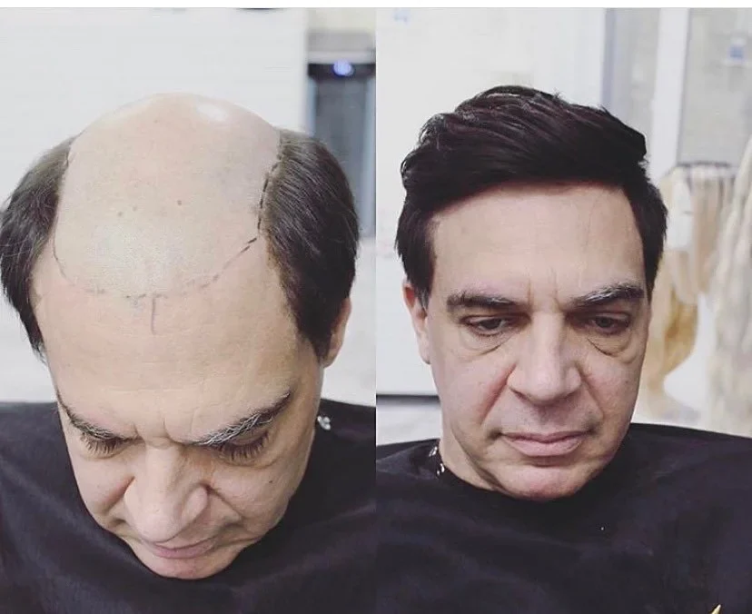

Non-surgical Hair Replacement For Men NYC
The Most Natural-Looking Men's Hair Replacement Systems in Manhattan, Greenwich Village, New York City
You Do Not Have to Lose Your Hair to Hair Loss
Hair loss affects millions of men across New York City, and many deal with it in silence, accepting a reality they were never entirely comfortable with because they believe the only alternatives are expensive surgery, ineffective products, or obvious hairpieces that look unnatural. At Luxe Aura Hair Salon in Greenwich Village, we want you to know that there are other options. Non-surgical hair replacement in Manhattan, NY, offers an alternative for men seeking a natural-looking solution without surgery. Non-surgical hair replacement in NYC has come a long way, with modern systems designed to look and feel like natural hair. At Luxe Aura Hair Salon, we provide personalized hair replacement solutions in NYC, helping clients explore options that suit their appearance, preferences, and lifestyle.
This service is ideal for men experiencing hair loss due to age, genetics, medical conditions, or other factors who are not ready for, interested in, or suitable candidates for surgical hair restoration. At Luxe Aura Hair Salon, our non surgical hair replacement in Manhattan, NY offers an alternative for men seeking the appearance of thicker, fuller hair without incisions or surgical recovery time. You can schedule a consultation to discuss your needs, explore suitable options, and learn about the expected timeline. Depending on the system and customisation required, installation may be available on the same day or within a week. Our goal is to help you find a solution that suits your appearance and lifestyle while supporting your confidence.
THE SYSTEM WILL HAVE TO MAINTAINED EVERY 6-8 WEEKS AND WILL HAVE TO BE RE-TIGHTENED.
What Is a Non-Surgical Hair Replacement System?
A non surgical hair replacement system in NYC is a lightweight, custom-created unit made from 100% real human hair that is designed to cover areas of hair loss and blend with your existing hair. Unlike traditional toupees, modern systems can feature a base made from silk or skin-like materials designed to mimic the appearance of your scalp. When properly fitted and styled, the system can create a natural-looking finish that blends with your overall appearance. Depending on the system and its maintenance requirements, you may be able to style it, wash it, get it wet, and continue many of your usual daily activities with confidence.
What makes the systems at Luxe Aura Hair different from what most people picture when they hear the word hairpiece is the quality of the hair and the precision of the customisation. We use 100% virgin human hair, both Brazilian and European, which means the hair behaves exactly like real hair because it is real hair. It can be cut, styled, coloured, and cared for just like the hair growing from your own scalp. The system is custom-built to match your exact hair colour, texture, density, and the specific size and shape of your hair loss area, which means the result is not just natural-looking in general — it is natural-looking for you specifically.
The system requires maintenance every six to eight weeks, at which point it is retightened and restyled. This regular appointment keeps everything looking fresh, natural, and perfectly integrated with your growing natural hair. Many of our clients describe the maintenance appointments as one of the most routine and effortless parts of their grooming routine, in and out, looking great, carrying on with their day.
BOOK AN APPOINTMENT TODAY
The Luxe Aura Hair Process, From Consultation to Confidence
Everything begins with a private consultation at our semi-private Greenwich Village studio. This is not a high-pressure sales environment. It is a calm, professional conversation where one of our licensed specialists, trained specifically in hair replacement systems for men, sits down with you, examines your hair loss pattern, and takes the time to understand exactly what you are looking for. We look at your natural hair colour, texture, density, and the size and shape of the area you want covered, and we use all of that information to design a system that will integrate so seamlessly with your own hair that nobody will ever know it is there.
Once your system is designed and created, which happens either on the same day or within one week, depending on your specific requirements, you come back in for the fitting and installation. The system is placed directly over the hair loss site and customised for the perfect fit to the shape of your head. There is absolutely no discomfort during the process. Our stylist then cuts, trims, and styles the 100% human hair to blend perfectly with your own, creating a finished result that looks like your natural hair at its best. Whether your natural hair is straight, wavy, curly, or a texture specific to your ethnic background, our team has the expertise to match it with precision.
From the moment the installation is complete, the system is yours to live with fully. You shower with it, style it, run your hands through it, and go to the gym with it. It holds up to everything your natural hair would hold up to, because the hair itself is real. Every six to eight weeks you come back for a retightening appointment, which keeps the system perfectly in place as your natural hair continues to grow. There is no dramatic maintenance routine, no special products required beyond what any person would use for their hair, and no moment where you are without it.
Why Non-Surgical Is the Right Choice for Most Men
Surgical hair restoration, hair grafts, transplants, and similar procedures have become more accessible in recent years, but it remains an expensive, time-consuming, and permanent commitment with a recovery period that can last months and results that are not always guaranteed. It also requires sufficient donor hair, meaning it is simply not an option for every man, regardless of budget. Non-surgical hair replacement at Luxe Aura Hair requires none of that. There is no surgery, no recovery, no scars, no waiting months to see if the grafts took. The result is immediate, completely reversible if you ever choose to change course, and far more affordable than any surgical alternative.
Many of our male clients come to us having tried other solutions first, topical treatments, supplements, and laser therapy, and found them either ineffective or too slow to produce meaningful results. Non-surgical hair replacement works from the very first appointment. You do not have to wait and hope. You sit in our chair, and you leave looking the way you want to look. For men who have been quietly carrying the weight of hair loss for years, that immediacy is often the most powerful part of the entire experience.
Our studio at Luxe Aura Hair is a full-service hair extensions and hair replacement salon, offering a complete range of colour, cutting, keratin treatment, and styling services. We provide personalised hair replacement solutions in NYC, helping clients explore options that suit their hair needs and personal preferences. Many of our male hair replacement clients also visit us for regular colour maintenance and grooming services, making Luxe Aura Hair a convenient destination for their hair care needs. Same-day consultations and installations may be available depending on appointment availability and individual requirements, and our team is ready to answer your questions before you make a decision.
Our Process Works like this…
• Determine your hair color, density, texture, and size of the hair loss site
• Create a specialized system either the same day or in one week
• Customize the system to the shape of your head to ensure the perfect fit
• We cut, trim, and style your hair
Whether you want curly, straight, sleek, or ethnic hair, we have the expertise to match most hair textures.
We offer same-day consultations and installations. Contact us at (212) 221-3881 to schedule a consultation for Hair Replacement for Men.
Frequently Asked Questions
Will anyone be able to tell I am wearing a hair replacement system?
No, not visually, and not by touch. The systems we use at Luxe Aura Hair are made from 100% real human hair attached to a silk or skin-like base that mimics the appearance of your natural scalp. Once it is installed and styled to blend with your own hair, it is completely undetectable in every normal life situation, at work, in social settings, in the gym, in intimate situations. The precision of the colour match, texture match, and custom fit is what makes the difference between a system that looks fake and one that is genuinely indistinguishable from your own hair. Ours is the latter.
How long does a hair replacement system last, and what does maintenance involve?
The system itself, with proper care, lasts for an extended period depending on usage and lifestyle. The maintenance appointment, which takes place every six to eight weeks, involves retightening the system as your natural hair grows and restyling it to keep the blend looking fresh and natural. The maintenance appointments are straightforward and relatively quick , most clients are in and out in under an hour. Between appointments, you care for your hair exactly as you would your own, regular washing, conditioning, and styling with the products you already use.
How much does non-surgical hair replacement for men cost at Luxe Aura Hair?
The cost of your hair replacement system depends on the size of the area being covered, the type and density of hair used, and whether additional colour or texture customisation is required. Because every system is created specifically for you, we do not publish a one-size-fits-all price, instead, we provide a full, transparent quote during your free consultation based on exactly what your situation requires. Same-day consultations are available every day, and there is never any obligation to book after the consultation. To get a clear picture of what your investment would look like, call us at (212) 221-3881 or book your free consultation at luxeaurahair.com/book-now.
Can the system match my exact hair texture and colour, including ethnic or curly hair?
Yes. One of the most important aspects of our customisation process is texture and colour matching, and our team has the expertise to match most hair textures accurately — including straight, wavy, curly, ethnic, and everything in between. During your consultation we assess your natural hair in detail and use that information to build a system that integrates specifically with your hair rather than sitting on top of it as something visibly different. For clients with particularly distinctive textures or colour, the system may take up to one week to prepare rather than being available same-day, but the result is always worth the brief wait.
I am nervous about coming in. Is the consultation private?
Completely. Our salon operates as a semi-private studio, which means your appointment is conducted away from the open floor environment of a typical salon. Hair loss is a personal subject and we treat it that way, with discretion, professionalism, and zero judgment. Many of our male hair replacement clients tell us that the consultation was far less intimidating than they expected, and that they wished they had come in sooner. There is no pressure whatsoever during the consultation, no obligation to proceed, and everything discussed is entirely confidential. You can call us at (212) 221-3881 or book online at luxeaurahair.com/book-now to get started.